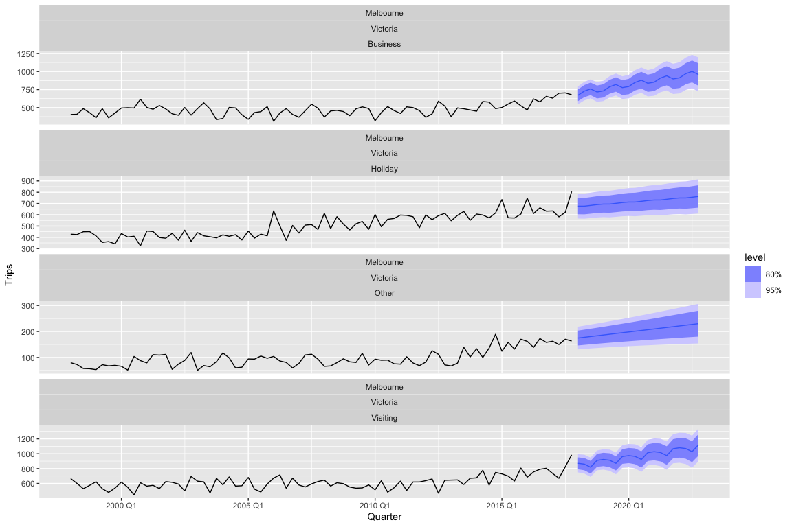
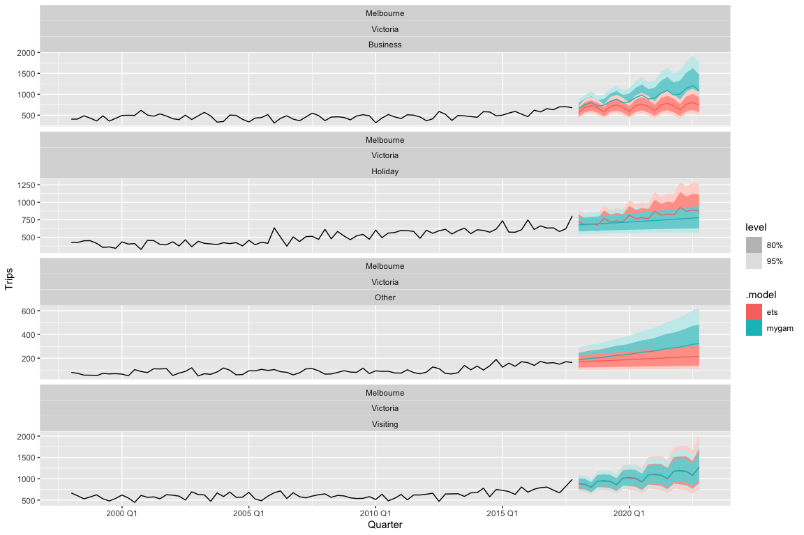
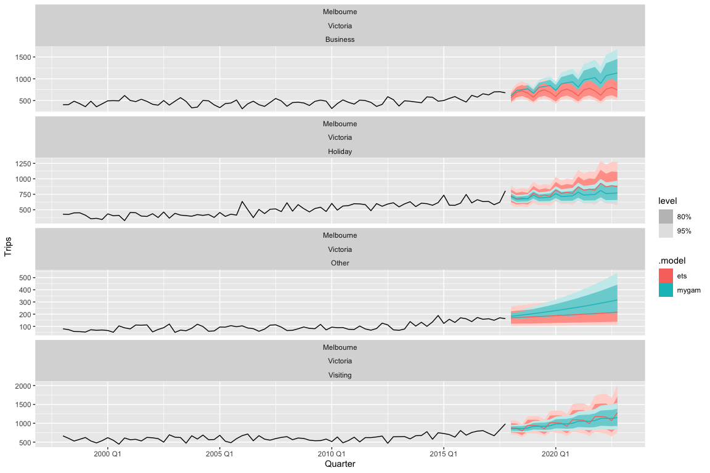
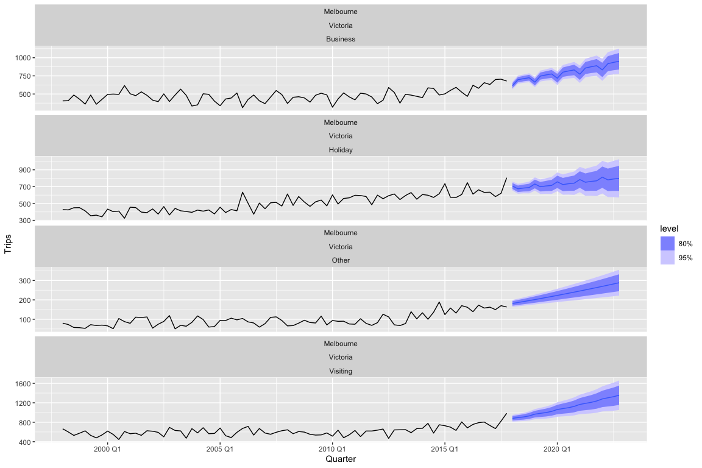
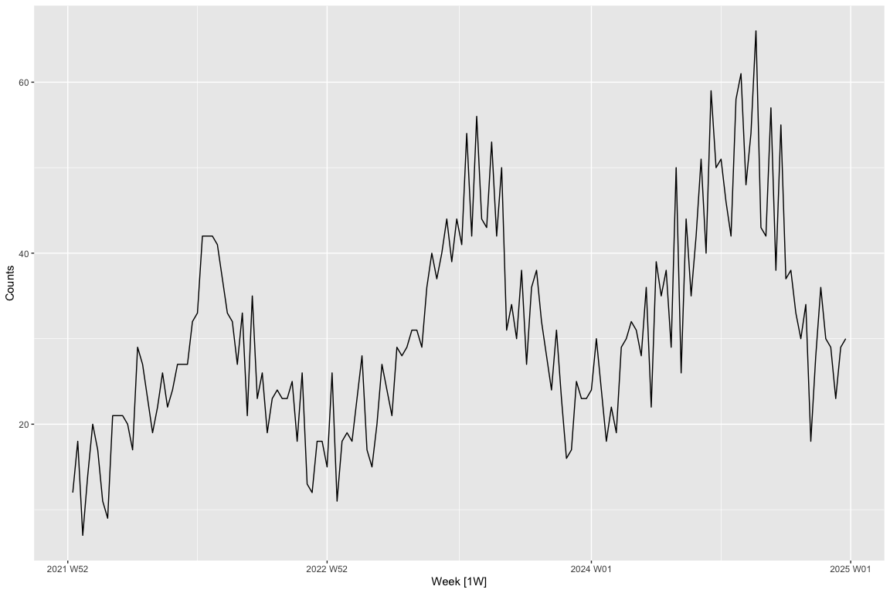
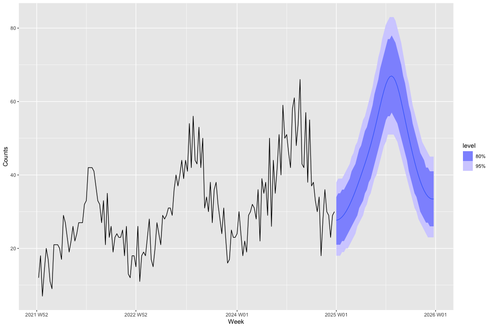

This package provides a tidy R interface to time-series modelling using generalised additive models (GAMs) using fable. This package makes use of the mgcv package for R. While not particularly common, GAMs have shown incredible utility in time-series modelling, such as in the context of palaeoecological data. This package aims to incorporate the broad conceptual approach of using structural time-series models (i.e., decomposing a time series into its trend, seasonality, error, and other components and modelling them additively) within a GAM setup into the incredible fable forecasting framework.
Installation
You can install the development version of fable.gam from GitHub using the following:
devtools::install_github("hendersontrent/fable.gam")Quick tour
library(tsibble)
library(dplyr)
library(ggplot2)
library(fable)
library(fable.gam)
library(tsibbledata)Just like in the fable vignette we are going to try and forecast the number of domestic travellers to Melbourne, Australia. In the tsibble::tourism data set, this can be further broken down into 4 reasons of travel: “business”, “holiday”, “visiting friends and relatives” and “other reasons”. The variable we are going to try and forecast is the number of overnight trips (000s) represented by the Trips variable.
Thanks to the excellent tsibble data structure for storing time-series data in R we know that this data is sampled quarterly. With that in mind, we are going to fit a simple time-series GAM using a (non)linear trend term and a seasonal term with a periodicity of 4. This is made easy in fable.gam through the usage of the fabletools ‘special’ functions trend and season which have been modified in fable.gam for the purposes of GAMs. Under the hood, fable.gam parses a trend() call as modelling a smooth function over time to capture temporal effects and a season() call as a smooth function using a cyclic cubic basis spline to ensure that over the duration of the time series, the start and end of a seasonal term connects (e.g., for data measured on a monthly basis, the end of final month – December – needs to connect continuously to the start of the following January).
Here is how easy this is to do in fable.gam through the GAM() function integrated into the fable interface:
tourism_melb <- tsibble::tourism |>
filter(Region == "Melbourne")
fit <- tourism_melb |>
model(mygam = GAM(Trips ~ trend() + season(4)))We can then easily pipe into the rest of the fable functionality, such as the forecast to produce forecasts. Here are automatic forecasts using the GAM for the next 5 years:
Warning: `autoplot.fbl_ts()` was deprecated in fabletools 0.6.0.
ℹ Please use `ggtime::autoplot.fbl_ts()` instead.
ℹ Graphics functions have been moved to the {ggtime} package. Please use
`library(ggtime)` instead.
This warning is displayed once per session.
Call `lifecycle::last_lifecycle_warnings()` to see where this warning was
generated.
We could then quantify model accuracy using the accuracy function in fable:
# A tibble: 4 × 13
Region State Purpose .model .type ME RMSE MAE MPE MAPE MASE
<chr> <chr> <chr> <chr> <chr> <dbl> <dbl> <dbl> <dbl> <dbl> <dbl>
1 Melbourne Victo… Busine… mygam Trai… 1.62e-14 52.0 39.7 -1.44 8.88 0.640
2 Melbourne Victo… Visiti… mygam Trai… 9.20e-14 52.1 41.4 -0.751 6.76 0.660
3 Melbourne Victo… Holiday mygam Trai… 1.37e-13 50.1 38.9 -0.990 7.79 0.706
4 Melbourne Victo… Other mygam Trai… -6.66e-15 19.1 15.8 -4.64 18.1 0.710
# ℹ 2 more variables: RMSSE <dbl>, ACF1 <dbl>Another common task is to extract point forecasts and confidence intervals from the forecast distribution. The hilo function from the distributional package knows how to automatically handle models fit in fable:
# A tsibble: 80 x 9 [1Q]
# Key: Region, State, Purpose, .model [4]
Region State Purpose .model Quarter
<chr> <chr> <chr> <chr> <qtr>
1 Melbourne Victoria Business mygam 2018 Q1
2 Melbourne Victoria Business mygam 2018 Q2
3 Melbourne Victoria Business mygam 2018 Q3
4 Melbourne Victoria Business mygam 2018 Q4
5 Melbourne Victoria Business mygam 2019 Q1
6 Melbourne Victoria Business mygam 2019 Q2
7 Melbourne Victoria Business mygam 2019 Q3
8 Melbourne Victoria Business mygam 2019 Q4
9 Melbourne Victoria Business mygam 2020 Q1
10 Melbourne Victoria Business mygam 2020 Q2
# ℹ 70 more rows
# ℹ 4 more variables: Trips <dist>, .mean <dbl>, `80%` <hilo>, `95%` <hilo>Hopefully this is starting to highlight the power of why integrating new methods into the fable framework rather than writing bespoke pipelines is so powerful!
Comparison to other common time-series methods
We can perform a quick sense-check of the approach against more commonly-used forecasting methods such as exponential smoothing. Here we will just specify an additive trend for the ETS model and let the other components be determined automatically. We will also log-transform the response variable to show that fable.gam handles these transformations automatically as well, just like all models in fable.
tourism_melb |>
model(
mygam = GAM(log(Trips) ~ trend() + season(4)),
ets = ETS(log(Trips) ~ trend("A"))
) |>
forecast(h = "5 years") |>
autoplot(tourism_melb)
Controlling the smooth function of the time trend
In addition to the trend() and season() special functions, fable.gam also includes the special trend2() which lets users control the smooth term fit to the temporal trend. trend2() takes arguments k (the dimension of the basis used to represent the smooth term; i.e., the number of knots) and bs (a two letter character string indicating the smoothing basis to use). Here is an example where we specify a basis of 5 and a Gaussian process smooth:
tourism_melb |>
model(mygam = GAM(Trips ~ trend2(k = 5, bs = "gp") + season(4))) |>
forecast(h = "5 years") |>
autoplot(tourism_melb)
Model fit
The suite of fable functions for interpreting trained models are also available to GAM models fit using fable.gam. glance() is one such example:
# A tibble: 4 × 13
Region State Purpose .model r_squared deviance df log_lik AIC BIC edf
<chr> <chr> <chr> <chr> <dbl> <dbl> <dbl> <dbl> <dbl> <dbl> <dbl>
1 Melbo… Vict… Busine… mygam 0.569 235947. 74.2 -433. 880. 896. 5.79
2 Melbo… Vict… Holiday mygam 0.752 197173. 74.9 -426. 864. 878. 5.06
3 Melbo… Vict… Other mygam 0.641 31195. 75.9 -352. 714. 726. 4.06
4 Melbo… Vict… Visiti… mygam 0.640 231727. 73.4 -432. 880. 898. 6.61
# ℹ 2 more variables: GCV <dbl>, scale <dbl>A more complicated example
fable.gam also permits the ability to specify autocorrelated errors to capture residual serial correlation, just like you can do using a gamm instead of a gam in mgcv. Here is another example from fpp3 which is seasonal, autocorrelated data with a small trend (note the addition of the fable.gam special errors(ar = 2) which captures the autocorrelation at lag 2 identified in fpp3).
h02 <- tsibbledata::PBS |>
filter(ATC2 == "H02") |>
summarise(Cost = sum(Cost) / 1e6)
h02 |>
model(
mygam = GAM(log(Cost) ~ trend() + season(12) + errors(ar = 2)),
arima = ARIMA(log(Cost) ~ 0 + pdq(3, 0, 1) + PDQ(0, 1, 2))
) |>
forecast() |>
autoplot(h02) +
labs(y = " $AU (millions)",
title = "Corticosteroid drug scripts (H02) sales") +
theme(legend.position = "bottom")
Non-Gaussian likelihoods
fable.gam is currently equipped to handle a few model families and link functions available to users familiar with fitting GAMs in mgcv:
- Gaussian family with any link function (e.g., identity)
- Gamma family with log link
- Poisson family with log link
- Negative binomial family with log link
These are the current options as there are clean mappings between their statistical form in mgcv and the distributional package which stores vectorised distribution objects for easy calculations.
To test this functionality, we can simulate some weekly count data from a Poisson distribution with a small upward trend and seasonality and inspect the raw time series:
set.seed(123)
n_weeks <- 156
start <- as.Date("2022-01-03")
dates <- start + (0:(n_weeks - 1)) * 7
t_coef <- seq_len(n_weeks)
trend <- 0.004 * t_coef
month_no <- lubridate::month(dates)
month_fx <- c(-0.35, -0.25, -0.05, 0.10, 0.25, 0.45, 0.50, 0.40, 0.20, 0.00, -0.20, -0.35)
seasonal <- month_fx[month_no]
log_lambda <- 3.0 + trend + seasonal
counts <- rpois(n_weeks, lambda = exp(log_lambda))
# Convert to tsibble and plot to visualise temporal pattern
weekly_counts <- tsibble(Week = yearweek(dates), Counts = counts, index = Week)
autoplot(weekly_counts, Counts)
We can now fit a GAM forecast model and specify the Poisson model family using the family() special function that is designed to work in fable.gam (note that you only need to specify the link argument of family() if you are using a Gaussian model family since a log-link is used for all others).
weekly_counts |>
model(gam = GAM(Counts ~ trend() + season(12) + season(52) + family(poisson))) |>
forecast(h = "52 weeks") |>
autoplot(weekly_counts)
We can also fit a negative binomial model to the same data as a comparison: